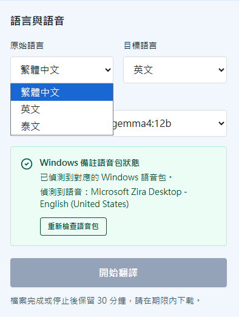

技術限制與決策
開發過程中的限制，也反過來定義產品邊界
翻譯模型切換
保留雲端模型與地端 Ollama 模型切換介面，讓公司可依成本、速度與資料安全需求調整。

Windows 本機語音
第一版採用 Windows SAPI，不額外產生外部語音費用，但語音品質與可用語言取決於電腦安裝的語音包。

最終成果
最後形成一個可操作、可驗證、可下載的網站流程

處理中畫面會顯示目前階段、進度百分比、頁數與可即時停止的按鈕。

完成後顯示輸出檔名、總頁數、語音頁數、警告數與下載按鈕。